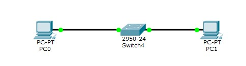
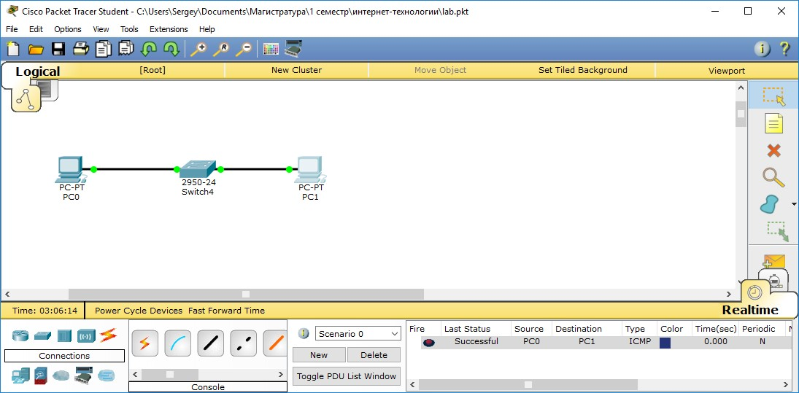
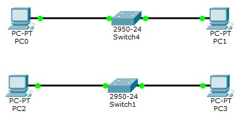
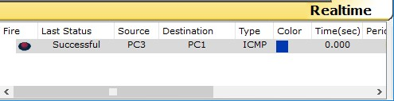
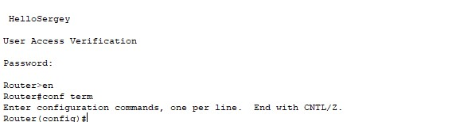
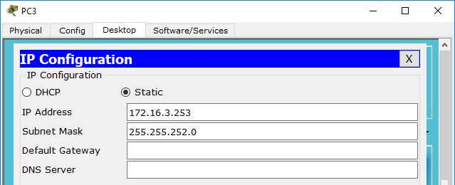
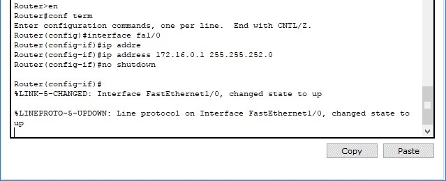
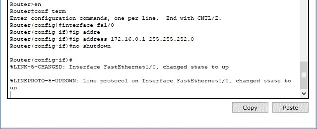
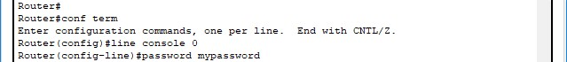

Задачи
-
Лабораторная работа №1 Экосистема разработки программ с открытым кодом":
Создание персональной страницы-отчета на github и работа с git
-
Лабораторная работа №2 "Разработка простого веб-приложения":
Проектирование и разработка индивидуального или коллективного веб-приложения (SPA) с использованием html,css,js + json,xml
-
Лабораторная работа №3 "Настройка локальной сети передачи данных":
Настройка коммутаторов и маршрутизаторов
-
Самооценка прохождения теста по инновациям, формулировка одного вопроса по теме "Интернет-технологии" в одной из форм, встречающихся в тесте (выбор одного, выбор многих, упорядочивание, соответствие)
Лабораторная работа #1
Работа с Github
Задачи:
-
Регистрация на GitHub.
-
Создать персональную веб страницу-отчет с использованием html, css, js.
-
Загрузить персональную веб страницу-отчет в репозиторий ИДМ-17 по курсу "Интернет-технологии" на GitHub.
Лабораторная работа #2
Разработка простого веб-приложения
Задачи:
-
Собрать команду для разработки веб-приложения (SPA) и распределить роли.
-
Разработать макет страницы веб-приложения.
-
Прописать js функционал и реализовать возможность чтения json.
Результат:
Лабораторная работа #3
Настройка локальной сети передачи данных
Задачи:
Настройка коммутаторов и маршрутизаторов.
Отчет по лабораторной работе. Вариант 2.
Цель лабораторной работы: ознакомиться с принципами работы компьютерных сетей, базовой настройкой сетевого оборудования и статической маршрутизацией.
Исходные данные:
| LAN A | LAN B | LAN C | |
|---|---|---|---|
| Количество хостов в сети | 5 | 965 | 1024 |
| Маска | /29 | /22 | /21 |
| Subnet | 192.168.2.0 | 172.16.0.0 | 10.10.0.0 |
| IP адрес первого хоста: | 192.168.2.1 | 172.16.0.1 | 10.10.0.1 |
| IP адрес последнего хоста | 192.168.2.6 | 172.16.3.254 | 10.10.7.254 |
| Broadcast | 192.168.2.7 | 172.16.3.255 | 10.10.7.255 |
- Разместить на рабочем поле коммутатор и два компьютера и соединить их 
- Настроить адресацию на добавленных компьютерах
- Выполнить проверку работоспособности сети 
- Добавить на рабочее поле еще один коммутатор с двумя компьютерами и настроить адресацию из другой подсети 
- Соединить коммутаторы между собой и проверить работоспособность сети
- В случае неработоспособности сети объяснить причины
- Добавить маршрутизатор на рабочее поле
- Настроить интерфейсы маршрутизатора для существующих подсетей
- Проверить работоспособность сети
- В случае неработоспособности сети объяснить причины
- Указать шлюз по умолчанию и отправить сообщение 
- Добавить на рабочее поле еще один маршрутизатор
- Подключить к нему коммутатор и компьютер
- Настроить сетевые настройки согласно таблице ниже
- Соединить между маршрутизаторы и настроить между ними сеть с префиксом /30
- Проверить работоспособность сети, отправив сообщение сети A в сеть С и из сети В в сеть С
- В случае неработоспособности сети объяснить причины
- Настроить статическую маршрутизацию между сетями
- Настроить на сетевых устройствах пароли для привилегированного режима
- Настроить пароли на сетевых устройствах пароли на подключение через консоль и telnet
- Установить баннер на сетевое оборудование
- Проверить работу удаленного подключения 
PC0:

PC1:

PC2:

PC3:
В сети А и сети B разная адресация, поэтому необходимо использовать маршрутизатор - устройство, предназначенное для объединения сегментов сети.

 


На компьютерах одной сети отсутствует информация о маршрутах к другой сети, поэтому необходимо указать шлюз по умолчанию.


На маршрутизаторах не настроена статическая маршрутизация.
От Router1 к Lan C:

От Router0 к Lan A, от Router0 к Lan B:


enable password mypassword
Пароль на подключение через консоль
Пароль на подключение через telnet:


Подготовка к экзамену
Вопрос по теме "Интернет-технологии".
Информация для вопроса была получена из Лекции 5 "Информационные технологии интернета".
Выберите ОДИН правильный ответ:
... - семейство XML- форматов, предназначенных для описания лент новостей, анонсов статей, изменений в блогах и т.п.
- А) RSS
- Б) OPML
- В) RDF
- Г) RQL
Правильный ответ: А